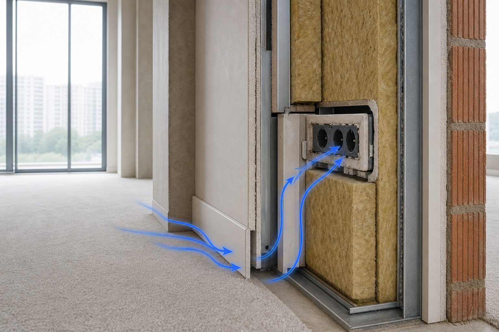

Акустические мостики и щели
Перегородка «как в проекте», материалы недешёвые — сосед слышен почти как раньше. Часто дело не в вате, а в щели у пола, общей розетке или стяжке, жёстко сидящей на стене. Звук идёт через самое слабое место контура.

Что такое мостик
Жёсткая связь, по которой вибрация и воздух обходят мягкий или тяжёлый слой. Пирог с ватой и двумя ГКЛ есть — а профиль прикручен насквозь к несущей стене соседа: вибрация идёт по металлу. Стяжка зашла на стену без демпферной ленты — пол и перегородка стали одним телом. Один слой ГКЛ на общую стену вместо развязанной системы — то же самое, только короче.
После отделки мостики часто не видны. Признаки: шум не там, где усиливали; на замере доминирует неожиданный путь; сняли плинтус — щель. Поэтому в проекте пишем узлы: чем крепить, чем герметизировать — не только «какие марки».
Щели и проходки
Зазор у пола за плинтусом, незакрытая коробка вентиляции, дыра под кондиционер, щель потолка к стене, общая розетка — акустические дыры. Толстая середина стены не спасает, если есть узкий канал. Контур держится по самому слабому звену.
Щель около 1% площади на части спектра даёт потерю порядка 10–20 дБ — зависит от частоты и формы. На практике: метр пирога «в ноль», если у пола 5 мм на всю ширину комнаты.
Ситуация
Дорогая перегородка по рекомендациям, шум остался. Плинтус сняли — щель 5 мм по периметру у пола.
Что проверяет ЦИА
Герметизация примыканий должна быть в проекте и проверена до чистовой. Иногда замер указывает на щель ещё до вскрытия — по картине передачи.
Розетки на общей стене
Подрозетник сквозь перегородку — отверстие насквозь. Воздух в коробке плюс жёсткая связь с соседской стороной. Перенос на другую стену, глубокий короб с герметизацией, напольный блок. Электрику лучше решить до шумоизоляции — этапы ремонта.
Что видим на объектах
Стяжка без демпферной ленты — пол коротнулся со стеной. Один общий профиль на две стороны. Труба без манжеты. Светильник в потолке без герметизации. Дверь без уплотнителя и с щелью у порога — слабое место всего контура комнаты.
Как не сломать в ремонте
Узлы на чертежах, не «на словах прорабу». Контроль на черновой: примыкания, проходки, нет жёстких связей — до закрытия ГКЛ. Фото узлов — страховка при споре. При шуме от соседей нередко материалы были нормальные, а мостик — в одном узле у пола.
После отделки
Иногда без полного демонтажа: щель за плинтусом, уплотнитель двери, локальный короб. Мостик внутри перегородки — вскрытие. Чем раньше нашли, тем дешевле. Замер и осмотр сужают круг.
Фланкирование
Мостики и щели — частный случай обхода основной преграды. Ещё варианты: общая шахта, стояк, тонкий участок у двери. Звукоизоляция квартиры смотрит на весь контур, не на одну стену «в вакууме».
Чек-лист до закрытия ГКЛ
Каркас не посажен жёстко на несущую стену соседа. Стяжка отделена лентой. Трубы и кабели с манжетами. Розетки на общих стенах перенесены или в герметичных коробах. Потолок не упирается в стены без демпфера. Сфотографируйте — при споре с бригадой фото «до» весомее спора «мы же так всегда делали».
Без строительного опыта попросите показать примыкания до чистовой. Один визит в нужный день дешевле вскрытия через полгода. На замере отмечаем зоны риска — куда смотреть в первую очередь.
Почему бригада «делала по опыту»
Профиль к стене, стяжка без ленты, розетки где удобно электрику — нормальная обычная комната. Для звукоизоляции — нет. Проект переводит «опыт» в проверяемые узлы. Без него заказчик и подрядчик спорят словами, а мостик остаётся за плинтусом.
Двери и окна
Тяжёлая стена и тонкая межкомнатная дверь с щелью у порога — слабое звено. В спальне к шумному коридору дверь с уплотнителем иногда важнее третьего ГКЛ. Окно — часть контура с улицы: другой спектр, тот же принцип — слабое место задаёт итог.
В проекте примыкания проверяют до закрытия отделкой — наравне с толщиной слоя.
По теме
Почему «не сработала стена» — часто отсюда, плюс шум от соседей. В потолке те же узлы при ударном шуме сверху.
Частые вопросы
Оставить заявку
Опишите помещение и задачу — подскажем формат работы ЦИА. Если вы прошли Проблемомер, поля заполнятся автоматически.
Задача отправлена